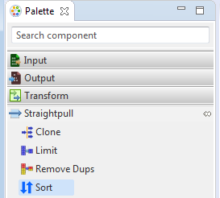
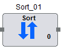

Hydrograph Help
Hydrograph Help
Sort
Hydrograph Release Version 1.0
Sort is used to sort the input records. The key fields and secondary key fields define the primary and secondary key fields to sort on respectively. It is present under the Straight Pull category in the component palette since no transformations are performed on the incoming data. If the ETL is run on Hadoop, Hadoop will always pass on sorted records to reducer. Even, if there is no reducer involved in the operation, there could be multiple mappers involved. In this case, the sort order while distribution of records to the mappers is not guaranteed. Hence, there is no guarantee that the component succeeding sort component will process the records in the sorted order.
Sort,has a single input port and a single output port. It does not have an unused port on it.
The Sort component can be easily distinguished in the component palette.

An enlarged version of the same is depicted when dragged on the canvas.

For further reference click on the links below: